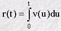
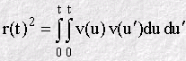
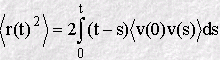
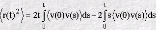
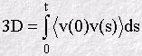
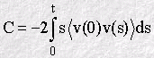

The Mean Squared Displacement and the Velocity Autocorrelation Function
The Mean Squared Displacement and the Velocity Autocorrelation Function
The MSD and the VAF seem to be two very different functions. The MSD is (for the most part) a linear function of time, while the VAF displays a complicated dependence on time. But a little thought will suggest that they must have something in common. Both, in an average sense, describe the motion of a molecule with time and must therefore be related somehow. The mathematical relationship is revealing, as the following shows.
We can describe the distance r(t) a molecule moves in time as an integral of its velocity v(t):

The square of this distance is thus:

defining u'=u+s and integrating over u, results in the following form where the ensemble average has also been taken:

In this equation <v(0) v(s)> is the velocity autocorrelation function, so the relationship between MSD and VAF is now apparent. This can also be written as:

What this integral shows is that the MSD is comprised of two parts. The first term on the right includes the time t explicitly and if we assume that when t is large, the VAF decays to zero (as it usually does) then the integral here will have a fixed value. Since the second term also integrates to a fixed value for large t, we can see that this equation is equivalent to Einstein's, provided we assume that:


when t is large. This is a very important result, as it shows how the diffusion coefficient can be obtained from both the VAF and the MSD!
Another thing we can see is that when t is small, the time dependence of the VAF cannot be ignored (it is no longer constant). So from the above integral, it follows that the MSD must depend on the behaviour of the VAF at short time. This means the short time behaviour of the MSD cannot be linear. Thus we learn that molecular motion only becomes a random walk after the velocity autocorrelation function becomes zero i.e. the molecules have `forgotten' what speed and direction they began with at t=0.